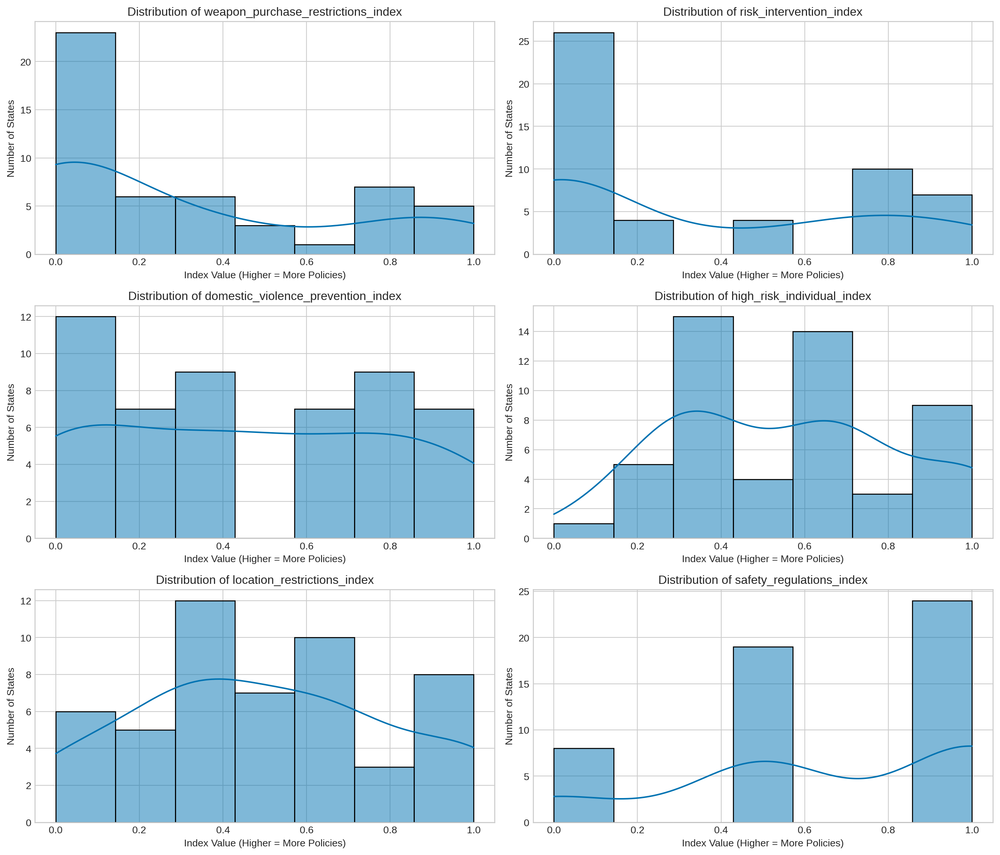
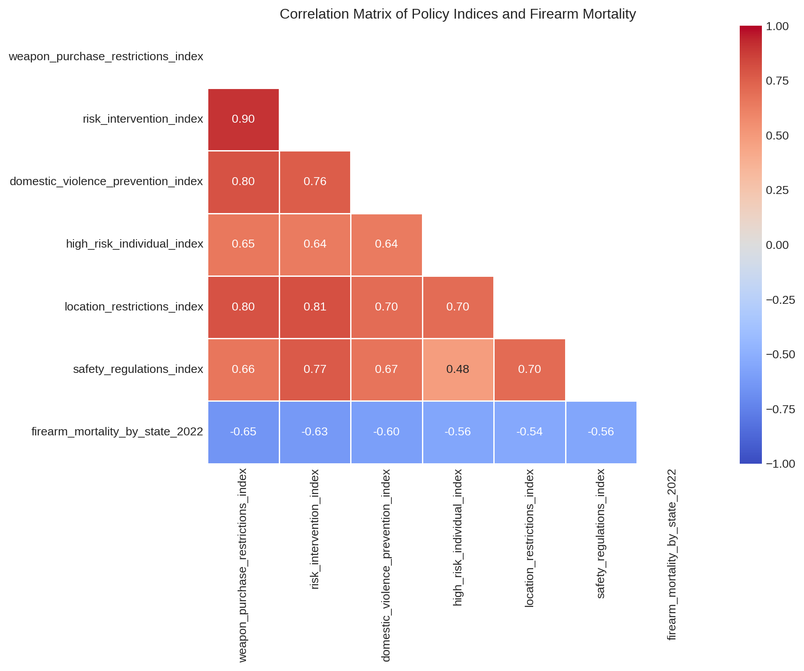
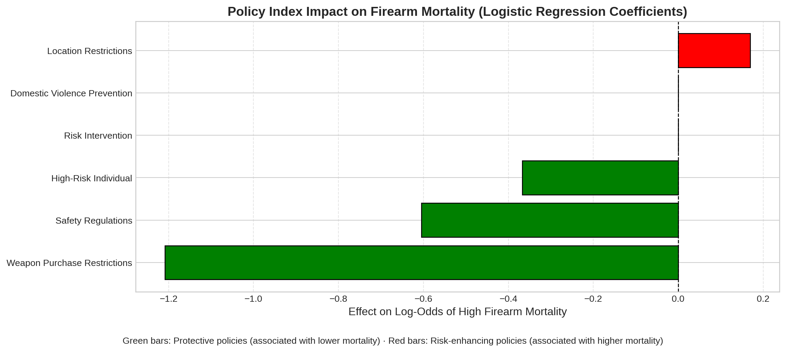

Gun Policy Impact on Firearm Mortality: A Data-Driven Statistical Analysis
Author
Kristin Lloyd
Published
Invalid Date
1 Introduction
This analysis investigates the relationship between gun policies and firearm mortality rates across U.S. states. Prior research suggests that certain policy approaches may be associated with lower rates of gun violence, but there has been limited work using data-driven approaches to identify which policy domains have the strongest protective associations.
In this study, we use Principal Component Analysis (PCA) to identify natural groupings of gun policies and then apply logistic regression to assess how these policy domains relate to firearm mortality outcomes. This approach allows us to move beyond subjective policy groupings to statistical categorizations that better reflect how these policies cluster in practice.
2 Data Preparation
We begin by loading the dataset containing state-level information on firearm mortality rates and various gun policy indicators. We then create a binary outcome variable representing whether a state’s firearm mortality rate is above or below the median.
Code
# Load necessary librariesimport pandas as pdimport numpy as npimport matplotlib.pyplot as pltimport seaborn as snsfrom sklearn.preprocessing import StandardScalerfrom sklearn.model_selection import train_test_split, cross_val_scorefrom sklearn.linear_model import LogisticRegressionfrom sklearn.impute import SimpleImputerfrom sklearn.metrics import (accuracy_score, precision_score, recall_score, f1_score, roc_curve, auc, confusion_matrix, classification_report)# Set plotting styleplt.style.use('seaborn-v0_8-whitegrid')sns.set_palette("colorblind")# Load the datasetdf = pd.read_csv("data/merged_data.csv")# Create a binary target variable for firearm mortalitydf["firearm_mortality_above_median"] = ( df["firearm_mortality_by_state_2022"] > df["firearm_mortality_by_state_2022"].median()).astype(int)# Display basic dataset informationprint(f"Dataset shape: {df.shape}")print(f"Number of states with high firearm mortality: {df['firearm_mortality_above_median'].sum()}")print(f"Number of states with low firearm mortality: {len(df) - df['firearm_mortality_above_median'].sum()}")
Dataset shape: (51, 75)
Number of states with high firearm mortality: 25
Number of states with low firearm mortality: 26
3 PCA-Based Policy Indices
Based on a prior Principal Component Analysis, we identified six natural groupings of gun policies. These groupings better reflect the statistical relationships among policies than arbitrary categorizations.
Code
# Define PCA-based composite indicespca_based_indices = {# Group 1: Weapon and Purchase Restrictions'weapon_purchase_restrictions_index': ['high_capacity_magazines_prohibited','asault_weapons_prohibited', 'background_check_or_purchase_permit','dealer_lisence_required','waiting_period','age_requirement' ],# Group 2: Risk-Based Intervention'risk_intervention_index': ['red_flag_laws','extreme_risk_law','gun_removal_program','rejected_shoot_first_laws' ],# Group 3: Domestic Violence Prevention'domestic_violence_prevention_index': ['prohibition_for_stalkers','prohibition_for_domestic_abusers','prohibition_for_convicted_domestic_abusers','abusers_turn_in_gun_after_conviction','restraining_order_prohibitor' ],# Group 4: High-Risk Individual Prohibitions'high_risk_individual_index': ['felony_prohibitor','fugitive_from_justice_prohibitor','mentaI_illness_prohibitor','hate_crime_prohibitor','no_purchase_after_violent_offense','mental_health_in_background_check' ],# Group 5: Location-Based Restrictions'location_restrictions_index': ['no_open_carry','concealed_carry_permit_required','no_guns_in_k_through_twelve_schools','no_guns_at_demonstrations','no_guns_on_college_campuses','bar_concealed_carry_by_people_with_violent_misdemeanors' ],# Group 6: Safety Regulations'safety_regulations_index': ['secure_storage_child_access_laws','funding_for_violence_intervention' ]}# Function to create composite indicesdef create_composite_indices(df, index_definitions): df_copy = df.copy()for name, columns in index_definitions.items(): df_copy[name] = df_copy[columns].fillna(0).mean(axis=1)return df_copy# Create dataset with PCA-based indicesdf_with_indices = create_composite_indices(df, pca_based_indices)# Display summary statistics for each indexindex_summary = df_with_indices[list(pca_based_indices.keys())].describe()print("Summary Statistics for Policy Indices:")index_summary
Summary Statistics for Policy Indices:
weapon_purchase_restrictions_index
risk_intervention_index
domestic_violence_prevention_index
high_risk_individual_index
location_restrictions_index
safety_regulations_index
count
51.000000
51.000000
51.000000
51.000000
51.000000
51.000000
mean
0.313725
0.343137
0.458824
0.562092
0.500000
0.656863
std
0.370656
0.396739
0.353936
0.282766
0.316228
0.367290
min
0.000000
0.000000
0.000000
0.000000
0.000000
0.000000
25%
0.000000
0.000000
0.200000
0.333333
0.333333
0.500000
50%
0.166667
0.000000
0.400000
0.666667
0.500000
0.500000
75%
0.583333
0.750000
0.800000
0.666667
0.666667
1.000000
max
1.000000
1.000000
1.000000
1.000000
1.000000
1.000000
4 Understanding the Policy Domains
The six policy domains identified through PCA represent different approaches to gun policy:
Weapon and Purchase Restrictions: Policies that control who can purchase firearms and what types of weapons are available (background checks, waiting periods, magazine limits).
Risk-Based Intervention: Policies that provide mechanisms to temporarily remove firearms from individuals who pose a risk to themselves or others (red flag laws, extreme risk protection orders).
Domestic Violence Prevention: Policies specifically targeting the intersection of domestic violence and firearms (prohibitions for stalkers, abusers).
High-Risk Individual Prohibitions: Policies that prevent firearm access for categories of individuals deemed high-risk (felons, fugitives, those with mental illness).
Location-Based Restrictions: Policies that restrict where firearms can be carried (schools, demonstrations, open carry restrictions).
Safety Regulations: Policies focused on safe storage and violence prevention programs.
Let’s visualize the distribution of these indices across states:
Code
# Visualize the distribution of each policy indexfig, axes = plt.subplots(3, 2, figsize=(14, 12))axes = axes.flatten()for i, index_name inenumerate(pca_based_indices.keys()): sns.histplot(df_with_indices[index_name], ax=axes[i], kde=True) axes[i].set_title(f"Distribution of {index_name}") axes[i].set_xlabel("Index Value (Higher = More Policies)") axes[i].set_ylabel("Number of States")plt.tight_layout()plt.show()

5 Correlations Between Policy Domains
Before building our predictive model, let’s examine how these policy domains correlate with each other and with firearm mortality rates:
Code
# Calculate correlation matrixcorrelation_vars =list(pca_based_indices.keys()) + ['firearm_mortality_by_state_2022']correlation_matrix = df_with_indices[correlation_vars].corr()# Plot correlation heatmapplt.figure(figsize=(10, 8))mask = np.triu(np.ones_like(correlation_matrix, dtype=bool))sns.heatmap(correlation_matrix, mask=mask, annot=True, cmap='coolwarm', fmt=".2f", linewidths=0.5, vmin=-1, vmax=1)plt.title('Correlation Matrix of Policy Indices and Firearm Mortality')plt.tight_layout()plt.show()

6 Logistic Regression Modeling
We’ll build a logistic regression model to predict whether a state has above-median firearm mortality based on its policy index values. We’ll compare three types of logistic regression: standard (no regularization), Lasso (L1 regularization), and Ridge (L2 regularization).
6.1 Data Preparation for Modeling
Code
# Prepare data for logistic regressionfeature_names =list(pca_based_indices.keys())X = df_with_indices[feature_names].copy()y = df_with_indices['firearm_mortality_above_median']# Handle missing valuesimputer = SimpleImputer(strategy="mean")X_imputed = imputer.fit_transform(X)# Scale the featuresscaler = StandardScaler()X_scaled = scaler.fit_transform(X_imputed)# Split data into training and testing setsX_train, X_test, y_train, y_test = train_test_split( X_scaled, y, test_size=0.2, random_state=42, stratify=y)
6.2 Model Comparison with Cross-Validation
Code
# Compare different logistic regression modelsmodels = {"Standard Logistic Regression": LogisticRegression(penalty=None, solver="lbfgs", max_iter=1000, random_state=42),"Lasso (L1) Logistic Regression": LogisticRegression(penalty="l1", solver="liblinear", max_iter=1000, random_state=42),"Ridge (L2) Logistic Regression": LogisticRegression(penalty="l2", solver="liblinear", max_iter=1000, random_state=42)}# Evaluate models with cross-validationprint("Cross-Validation Results:")cv_results = {}for name, model in models.items():# Perform cross-validation cv_scores = cross_val_score(model, X_scaled, y, cv=5, scoring="accuracy") cv_results[name] = {"Mean Accuracy": np.mean(cv_scores),"Std Dev": np.std(cv_scores) }print(f"{name}: Accuracy = {np.mean(cv_scores):.4f} (±{np.std(cv_scores):.4f})")# Visualize cross-validation resultsplt.figure(figsize=(10, 6))models_names =list(cv_results.keys())accuracies = [cv_results[name]["Mean Accuracy"] for name in models_names]std_devs = [cv_results[name]["Std Dev"] for name in models_names]plt.bar(models_names, accuracies, yerr=std_devs, capsize=10, alpha=0.7)plt.ylabel('Cross-Validation Accuracy')plt.title('Comparison of Logistic Regression Models')plt.ylim(0.5, 1.0)plt.grid(axis='y', linestyle='--', alpha=0.3)plt.xticks(rotation=15)plt.tight_layout()plt.show()
One of the key advantages of using Lasso regression is that it helps identify the most important features by shrinking less important coefficients to zero. Let’s analyze which policy domains have the strongest associations with firearm mortality:
Code
# Feature importance analysiscoefficients = best_model.coef_[0]importance_df = pd.DataFrame({'Feature': feature_names,'Coefficient': coefficients,'Abs_Coefficient': np.abs(coefficients)}).sort_values('Abs_Coefficient', ascending=False)# Add interpretation columnimportance_df['Effect'] = ['Increases Mortality Risk'if c >0else'Decreases Mortality Risk'for c in importance_df['Coefficient']]print("\nFeature Importance:")print(importance_df)# Plot feature importanceplt.figure(figsize=(10, 6))colors = ['red'if x >0else'green'for x in importance_df['Coefficient']]plt.barh( importance_df['Feature'], importance_df['Coefficient'], color=colors)plt.xlabel('Coefficient (Impact on Log-Odds of High Firearm Mortality)')plt.ylabel('Policy Index')plt.title('Feature Importance: PCA-Based Policy Indices')plt.axvline(x=0, color='black', linestyle='-')plt.grid(axis='x', linestyle='--', alpha=0.6)plt.figtext(0.5, 0.01, "Negative coefficients (green) indicate policies associated with LOWER firearm mortality\n""Positive coefficients (red) indicate policies associated with HIGHER firearm mortality", ha="center", fontsize=10, bbox={"facecolor":"white", "alpha":0.8, "pad":5})plt.tight_layout(rect=[0, 0.05, 1, 0.95])plt.show()
import matplotlib.pyplot as pltimport pandas as pdimport numpy as np# Create a mapping for cleaner feature namesclean_names = {'domestic_violence_prevention_index': 'Domestic Violence Prevention','risk_intervention_index': 'Risk Intervention','location_restrictions_index': 'Location Restrictions','high_risk_individual_index': 'High-Risk Individual','safety_regulations_index': 'Safety Regulations','weapon_purchase_restrictions_index': 'Weapon Purchase Restrictions'}# Apply mapping to DataFrameimportance_df['Clean Feature'] = importance_df['Feature'].map(clean_names)# Sort by absolute coefficientimportance_df = importance_df.sort_values('Coefficient')# Set colorscolors = ['red'if coef >0else'green'for coef in importance_df['Coefficient']]# Plotplt.figure(figsize=(12, 5))plt.barh( importance_df['Clean Feature'], importance_df['Coefficient'], color=colors, edgecolor='black')# Aestheticsplt.axvline(x=0, color='black', linestyle='--', linewidth=1)plt.xlabel('Effect on Log-Odds of High Firearm Mortality', fontsize=12)plt.ylabel('')plt.title('Policy Index Impact on Firearm Mortality (Logistic Regression Coefficients)', fontsize=14, weight='bold')plt.grid(axis='x', linestyle='--', alpha=0.5)# Captionplt.figtext(0.5, -0.05, "Green bars: Protective policies (associated with lower mortality) · Red bars: Risk-enhancing policies (associated with higher mortality)", wrap=True, ha="center", fontsize=10)plt.tight_layout()plt.show()

8 Discussion and Interpretation
Our analysis reveals several key findings about the relationship between gun policies and firearm mortality:
Weapon Purchase Restrictions: This domain shows the strongest protective association with firearm mortality. States with more comprehensive purchase restrictions (including background checks, waiting periods, dealer licensing, and assault weapon bans) tend to have significantly lower firearm mortality rates.
Safety Regulations: The second most important factor, also showing a substantial protective effect. This includes secure storage laws and funding for violence intervention programs.
High-Risk Individual Prohibitions: These policies also show a moderate protective association, suggesting that limiting gun access for high-risk individuals (such as those with felony convictions or mental illness) may help reduce mortality.
Location Restrictions: Interestingly, this is the only domain with a positive coefficient, suggesting that location-based restrictions might be associated with slightly higher mortality rates. This could reflect that these policies might be reactive (implemented in response to existing violence) rather than preventive.
Risk Intervention and Domestic Violence Prevention: These domains were eliminated by the Lasso regression (coefficients set to zero), suggesting that after accounting for the other policy domains, they don’t add significant predictive power. This doesn’t necessarily mean these policies are ineffective, but rather that their effects might already be captured by the other indices.
The model shows good discrimination ability with an AUC of 0.87, suggesting that these policy domains together provide meaningful predictive power for firearm mortality outcomes.
9 Limitations
Several limitations should be considered when interpreting these results:
Causality: This analysis identifies associations but cannot establish causality. States with lower firearm mortality might be more likely to implement certain policies, rather than the policies causing the lower mortality.
Small Sample Size: With only 50 states (plus DC), the statistical power is limited, especially for the test set evaluation.
Implementation Quality: Our indices measure the presence of policies but not how well they are implemented or enforced.
Confounding Factors: Many other factors beyond gun policies influence firearm mortality, including socioeconomic conditions, healthcare access, and cultural factors.
10 Conclusion
This data-driven analysis suggests that comprehensive weapon purchase restrictions may be the most promising policy approach for reducing firearm mortality, followed by safety regulations and high-risk individual prohibitions. Future research should examine the causal mechanisms behind these associations and how policy implementation affects outcomes.
The use of PCA-based policy groupings provides a novel approach to understanding how gun policies naturally cluster and relate to mortality outcomes, moving beyond subjective categorizations to data-driven insights.